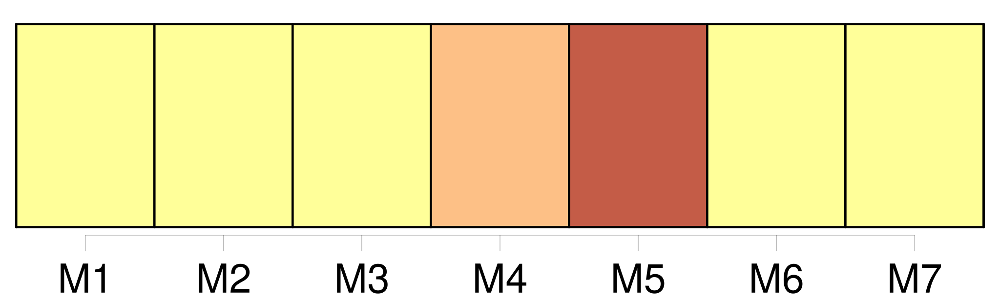

Longueur nb maillons : 211 mentions |
 |
Convention relative au renforcement de [la Commission interaméricaine du thon tropical établie par la convention de 1949 entre les États-Unis d'Amérique et la République du Costa Rica] ( « convention d'Antigua » )
0010 -0025 [3 phrases]
Les membres de [la Commission] , directement et par l'intermédiaire de [la Commission] , appliquent l'approche de précaution, telle que définie dans les dispositions pertinentes du code de conduite et / ou de l'accord de New York de 1995, pour la conservation, la gestion et l'utilisation durable des stocks de poissons visés par la présente convention. [1 phrases] En particulier, les membres de [la Commission] prennent d'autant plus de précautions que les informations sont incertaines, peu fiables ou inadéquates. [2 phrases] Lorsque l'état des stocks de poissons visés ou des espèces non visées, ou des espèces associées ou dépendantes devient préoccupant, les membres de [la Commission] renforcent la surveillance qu'ils exercent sur ces stocks et espèces afin d'évaluer leur état et l'efficacité des mesures de conservation et de gestion. [5 phrases]
TITRE III : [LA COMMISSION INTERAMÉRICAINE DU THON TROPICAL]
Les membres de [la Commission] conviennent de conserver, avec l'ensemble de [ses] actifs et de [ses] passifs, et de renforcer [la Commission interaméricaine du thon tropical établie par la convention de 1949] [1 phrases]
[La Commission] est constituée de sections composées d'un ( 1 ) à quatre ( 4 ) commissaires désignés par chaque membre, qui peuvent être accompagnés des experts et conseillers dont ce membre juge la présence opportune. [1 phrases] [La Commission] possède la personnalité juridique et jouit, dans le cadre de [ses] relations avec d'autres organisations internationales ainsi qu'avec [ses] membres, de la capacité juridique nécessaire à l'exercice de [ses] fonctions et à la réalisation de [son] objectif, conformément au droit international.
Les immunités et privilèges dont bénéficient [la Commission] et [ses] agents sont soumis à un accord entre [la Commission] et le membre concerné. [1 phrases]
Le siège de [la Commission] est maintenu à San Diego, Californie, États-Unis d'Amérique.
Article VII : Fonctions de [la Commission]
[La Commission] exerce les fonctions suivantes, en accordant la priorité aux thons et aux espèces apparentées :
Chaque membre de [la Commission] peut également conserver son propre programme, conforme aux directives adoptées par [la Commission] ;
Lorsque [la Commission] adopte des mesures conformément à l'approche de précaution en l'absence d'informations scientifiques appropriées, ainsi que prévu à l'article IV, paragraphe 2, de la présente convention, [la Commission] s'efforce d'obtenir dans les meilleurs délais les informations scientifiques nécessaires au maintien ou à la modification de ces mesures ; [1 phrases] [La Commission] entretient un personnel qualifié sur les questions relatives à la présente convention, y compris dans les domaines administratif, scientifique et technique, sous la supervision du directeur, et [veille] à ce qu'il comprenne tout le personnel nécessaire à une application efficace et effective de la présente convention.
[La Commission] doit rechercher le personnel disponible le plus qualifié, et prendre dûment en considération l'importance de recruter ce personnel sur une base équitable afin de promouvoir une représentation et une participation larges des membres de [la Commission] [1 phrases]
Lorsqu' [elle] examine les directives à formuler pour le programme de travail sur les questions scientifiques que doit traiter le personnel scientifique, [la Commission] tient compte, entre autres, des conseils, des recommandations et des rapports du comité scientifique consultatif établi en vertu de l'article XI de la présente convention.
Article VIII : Réunions de [la Commission]
Les réunions ordinaires de [la Commission] se tiennent au moins une fois par an, au lieu et à la date convenus par [la Commission] [1 phrases] [La Commission] peut également tenir des réunions extraordinaires lorsqu' [elle] le juge nécessaire.
Ces réunions sont convoquées à la demande d'au moins deux membres de [la Commission] , sous réserve qu'une majorité de membres appuie cette demande. [1 phrases] Les réunions de [la Commission] ne se tiennent que lorsque le quorum est atteint. Celui -ci est atteint lorsque deux tiers des membres de [la Commission] sont présents. [2 phrases]
Les réunions se tiennent en anglais et en espagnol, et les documents de [la Commission] sont élaborés dans ces deux langues. [4 phrases]
Sauf disposition contraire, toutes les décisions prises par [la Commission] lors de réunions convoquées conformément à l'article VIII de la présente convention le sont par consensus des membres de [la Commission] présents lors de la réunion en question. [2 phrases]
Dans ce cas, le président de la réunion doit veiller à ce que tous les membres de [la Commission] aient la possibilité d'exprimer leurs points de vue sur les propositions de décision, dont les parties tiennent compte pour prendre la décision finale. [1 phrases]
Le consensus de tous les membres de [la Commission] est requis pour les décisions concernant : [1 phrases] S'agissant des décisions mentionnées aux points 2 et 3 du présent article, si une partie ou un membre de [la Commission] , le cas échéant, est absent lors de la réunion en question et n'a pas envoyé une notification conformément au point 6 du présent article, le directeur notifie à cette partie ou à ce membre la décision prise lors de ladite réunion. [1 phrases]
Si, dans ce délai de trente ( 30 ) jours, cette partie ou ce membre répond par écrit qu'il ne peut s'associer au consensus sur la décision en question, celle -ci est sans effet, et [la Commission] s'efforce de parvenir à un consensus aussitôt que possible. [1 phrases]
Lorsqu'une partie ou un membre de la Commission qui était absent lors d'une réunion notifie au directeur qu'il ne peut s'associer au consensus sur une décision prise lors de cette réunion, conformément au paragraphe 4 du présent article, ce membre ne peut s'opposer au consensus sur la même question s'il est absent lors de la réunion suivante de [la Commission] à l'ordre du jour de laquelle figure cette question. [1 phrases]
Si un membre de [la Commission] n'est pas en mesure d'assister à une réunion de [la Commission] en raison de circonstances exceptionnelles et imprévues indépendantes de sa volonté : [1 phrases]
Dans ce cas, la décision ou les décisions en question sont sans effet, et [la Commission] s'efforce de parvenir à un consensus aussitôt que possible. [1 phrases]
Les décisions adoptées par [la Commission] conformément à la présente convention lient tous les membres quarante-cinq ( 45 ) jours après leur notification, sauf indication contraire dans la présente convention ou à moins qu'il n'en ait été convenu autrement lors de la prise de décision.
Article X : Comité chargé de l'examen de l'application des mesures adoptées par [la Commission]
[La Commission] établit un comité chargé de l'examen de l'application des mesures adoptées par [la Commission] , composé des représentants désignés à cet effet par chaque membre de [la Commission] , qui peuvent être accompagnés des experts et conseillers dont ces membres jugent la présence opportune. [3 phrases]
Dans l'exercice de ses fonctions, le comité peut, le cas échéant, et avec l'agrément de [la Commission] , consulter toute autre organisation de gestion des pêcheries, toute autre organisation technique ou scientifique, compétente sur le thème de cette consultation, et peut solliciter des conseils d'experts, en tant que de besoin, cas par cas. [5 phrases]
Le comité tient au moins une réunion par an, de préférence à l'occasion de la réunion ordinaire de [la Commission] [1 phrases]
Le comité peut convoquer d'autres réunions, à la demande d'au moins deux ( 2 ) membres de [la Commission] , sous réserve qu'une majorité de membres appuie cette demande. [1 phrases]
Le comité exerce ses fonctions conformément aux règles de procédures, directives et instructions adoptées par [la Commission] [1 phrases]
Pour appuyer les travaux du comité, le personnel de [la Commission] doit : [1 phrases]
[La Commission] établit un comité scientifique consultatif, composé d'un représentant désigné par chaque membre de [la Commission] , ayant les qualifications appropriées ou l'expérience requise dans le domaine de compétence du comité, et qui peut être accompagné des experts ou conseillers dont ce membre juge la présence opportune. [1 phrases]
[La Commission] peut inviter des organisations ou des personnes ayant une expérience scientifique reconnue dans les domaines liés à [ses] travaux, à participer aux travaux du comité. [3 phrases]
Le comité se réunit au moins une fois par an, de préférence avant la tenue d'une réunion de [la Commission] [1 phrases]
Le comité peut convoquer d'autres réunions, à la demande d'au moins deux ( 2 ) membres de [la Commission] , sous réserve qu'une majorité de membres appuie cette demande. [1 phrases]
Le directeur exerce les fonctions de président du comité ou peut déléguer l'exercice de ces fonctions, sous réserve de l'approbation de [la Commission] [5 phrases] [La Commission] nomme, conformément aux règles de procédure adoptées et en tenant compte de tous les critères qui y sont établis, un directeur dont les compétences dans le domaine de la présente convention sont établies et généralement reconnues, en particulier en ce qui concerne ses aspects scientifiques, techniques et administratifs, qui rend compte à [la Commission] et que [la Commission] peut révoquer à [sa] discrétion.
Le mandat du directeur est de quatre ( 4 ) ans et il peut être reconduit dans ses fonctions autant de fois que [la Commission] le décide. [1 phrases]
Les fonctions du directeur sont les suivantes : [1 phrases] Dans l'exercice de leurs fonctions, le directeur et le personnel de [la Commission] s'abstiennent d'agir d'une manière qui pourrait être incompatible avec leur statut ou avec l'objectif et les dispositions de la présente convention. [1 phrases]
Ils veillent de même, pendant l'exercice de leurs fonctions au sein de [la Commission] et ultérieurement, à ne divulguer aucune information confidentielle qu'ils auraient obtenue ou à laquelle ils auraient eu accès dans l'exercice de leurs fonctions.
Article XIII : Personnel scientifique [1 phrases] [La Commission] adopte tous les ans [son] budget pour l'année suivante, conformément à l'article IX, paragraphe 3, de la présente convention.
Lorsqu' [elle] détermine le montant du budget, [la Commission] doit dûment prendre en considération le principe du rapport coût-efficacité. [1 phrases]
Le directeur soumet à l'examen de [la Commission] un projet détaillé de budget annuel qui précise les dépenses envisagées à partir des contributions visées à l'article XV, paragraphe 1, ainsi que celles visée à l'article XV, paragraphe 3, de la présente convention. [1 phrases] [La Commission] tient une comptabilité séparée pour les activités réalisées en vertu de la présente convention et en vertu de l'APICD. Les services fournis à l'APICD et les coûts estimés correspondants sont détaillés dans le budget de [la Commission] [2 phrases]
Les comptes de [la Commission] sont soumis chaque année à un audit financier indépendant. [1 phrases] Le montant de la contribution de chaque membre de [la Commission] au budget est défini conformément au schéma adopté et, selon les circonstances, amendé par [la Commission] , conformément à l'article IX, paragraphe 3, de la présente convention.
Le schéma adopté par [la Commission] doit être transparent et équitable pour tous les membres et détaillé dans le règlement financier de [la Commission] [1 phrases]
Les contributions convenues conformément aux dispositions du paragraphe 1 du présent article doivent permettre le fonctionnement de [la Commission] et financer en temps utile le budget annuel voté conformément à l'article XIV, paragraphe 1, de la présente convention. [1 phrases]
[La Commission] doit établir un fonds destiné à recevoir des contributions volontaires pour la recherche et la conservation des stocks de poissons visés par la présente convention et, le cas échéant, des espèces associées ou dépendantes, ainsi que pour la conservation de l'environnement marin. [1 phrases]
Sans préjudice des dispositions de l'article IX de la présente convention, et à moins que [la Commission] n'en décide autrement, si un membre de [la Commission] accumule des arriérés de contributions d'un montant égal ou supérieur à la somme des contributions qu'il doit au titre des vingt-quatre mois précédents, ce membre n'a pas le droit de participer à la prise de décisions au sein de [la Commission] avant d'avoir satisfait à ses obligations en vertu du présent article. [1 phrases]
Chaque membre de [la Commission] couvre les dépenses liées à sa participation aux réunions de [la Commission] et de [ses] organes subsidiaires. [1 phrases]
[La Commission] , dans [son] processus de prise de décisions et dans [ses] autres activités, promeut la transparence quant à l'application de la présente convention, entre autres, par le biais de : [1 phrases] Les représentants des États non parties, des organisations intergouvernementales appropriées et des organisations non gouvernementales, y compris des organisations écologistes dont l'expérience est reconnue dans les domaines de compétence de [la Commission] , ainsi que l'industrie thonière de tout membre de [la Commission] opérant dans la zone de la convention, en particulier la flotte de pêche thonière, ont la possibilité de participer aux réunions de [la Commission] et de [ses] organes subsidiaires, en qualité d'observateurs ou autres, selon le cas, conformément aux principes et critères établis à l'annexe 2 de la présente convention ou à ceux que [la Commission] peut adopter.
Ces participants doivent avoir accès en temps opportun aux informations pertinentes, sous réserve des règles de procédure et de confidentialité adoptées par [la Commission] en ce qui concerne l'accès à ce type d'informations.
Titre IV : Droits et obligations des membres de [la commission] [3 phrases]
Chaque partie fournit à [la Commission] toutes les informations nécessaires à la réalisation de l'objectif de la présente convention, y compris les informations statistiques et biologiques et celles relatives à ses activités de pêche dans la zone de la convention, et met à disposition de [la Commission] les informations concernant les actions entreprises pour appliquer les mesures adoptées conformément à la présente convention, lorsque [la Commission] le requiert et en tant que de besoin, sous réserve des dispositions de l'article XXII de la présente convention et conformément aux règles de procédure élaborées et adoptées par [la Commission] [1 phrases]
Chaque partie doit, dans les meilleurs délais, par l'intermédiaire du directeur, informer le comité chargé de l'examen de l'application des mesures adoptées par [la Commission] établi conformément aux dispositions de l'article X de la présente convention : [1 phrases]
Chaque partie : [3 phrases] Chaque partie, lorsqu'elle a des motifs raisonnables de croire qu'un navire battant pavillon d'un autre État se livre à une activité qui compromet l'efficacité des mesures de conservation et de gestion adoptées pour la zone de la convention, attire sur ce point l'attention de l'État du pavillon concerné et peut, le cas échéant, attirer l'attention de [la Commission] sur ce point. La partie en question doit fournir à l'État du pavillon tous les éléments de preuve recueillis et peut en remettre un résumé à [la Commission]
[La Commission] s'abstient de diffuser ces informations avant que l'État du pavillon n'ait eu la possibilité de commenter, dans un délai raisonnable, les allégations et les éléments de preuve soumis à sa considération ou d'y faire objection, selon le cas. [1 phrases]
Chaque partie, à la demande de [la Commission] ou d'une quelconque autre partie et, lorsque des informations pertinentes selon lesquelles un navire relevant de sa juridiction a exercé des activités allant à l'encontre des mesures adoptées conformément à la présente convention lui ont été communiquées, doit mener une enquête approfondie et, le cas échéant, agir conformément à sa législation nationale et informer, dans les meilleurs délais, [la Commission] et, s'il y a lieu, l'autre partie, des conclusions de son enquête et des actions entreprises. [3 phrases]
Les parties dont les côtes sont limitrophes de la zone de la convention, ou dont les navires pêchent des stocks de poissons visés par la présente convention ou sur le territoire desquelles les captures sont débarquées et traitées coopèrent afin de garantir le respect de la présente convention et l'application des mesures de conservation et de gestion adoptées par [la Commission] , y compris, en tant que de besoin, par l'adoption de mesures et de programmes de coopération. [1 phrases]
Si [la Commission] détermine que des navires pêchant dans la zone de la convention ont exercé des activités qui compromettent l'efficacité des mesures de conservation et de gestion adoptées par [la Commission] ou qui les enfreignent d'une autre manière, les parties peuvent engager une action, en accord avec les recommandations adoptées par [la Commission] et conformément à la présente convention et au droit international, pour dissuader ces navires d'exercer de telles activités jusqu'à ce que l'État du pavillon ait pris les mesures appropriées pour s'assurer que ces navires ne poursuivront pas ces activités.
Article XIX : Application, respect de la réglementation et pouvoirs de police des entités de pêche [7 phrases]
Article XXI : Obligations des entités de pêche [1 phrases]
[La Commission] établit des règles de confidentialité applicables à toutes les instances et personnes ayant accès aux informations en vertu de la présente convention. [3 phrases]
[La Commission] s'attache à adopter des mesures relatives à l'assistance technique, au transfert de technologie, à la formation et à d'autres formes de coopération, afin d'aider les pays en développement membres de [la Commission] à se conformer à leurs obligations découlant de la présente convention, ainsi que pour améliorer leur capacité à développer la pêche relevant de leur juridiction nationale respective et pour participer de manière durable à la pêche en haute mer. [1 phrases]
Les membres de [la Commission] facilitent et promeuvent cette coopération, en particulier la coopération technique et financière, et le transfert de technologie, en tant que de besoin pour la mise en œuvre effective du paragraphe 1 du présent article. [1 phrases]
[La Commission] coopère avec des organisations et des arrangements de gestion des pêcheries sous-régionaux, régionaux et mondiaux et, le cas échéant, établit des arrangements institutionnels appropriés tels que des comités consultatifs, en accord avec ces organisations et arrangements, dans le but de promouvoir la réalisation de l'objectif de la présente convention, d'obtenir les meilleures informations scientifiques disponibles, et d'éviter les doubles emplois s'agissant de leurs travaux. [1 phrases]
[La Commission] , en accord avec les organisations ou arrangements appropriés, adopte les règles de fonctionnement des arrangements institutionnels établis conformément au paragraphe 1 du présent article. [1 phrases] Lorsque la zone de la convention empiète sur une zone réglementée par une autre organisation de gestion des pêcheries, [la Commission] coopère avec cette organisation afin de garantir la réalisation de l'objectif de la présente convention.
À cette fin, au moyen de consultations ou d'autres arrangements, [la Commission] s'attache à convenir avec l'autre organisation des mesures pertinentes à prendre, permettant par exemple d'assurer l'harmonisation et la compatibilité des mesures de conservation et de gestion adoptées par [la Commission] et l'autre organisation, ou de décider que [la Commission] ou l'autre organisation, selon le cas, évite de prendre dans cette zone des mesures relatives aux espèces réglementées par l'autre partie. [1 phrases]
Les dispositions du paragraphe 3 du présent article s'appliquent, le cas échéant, au cas des stocks de poissons traversant, au cours de leur migration, des zones relevant de la compétence de [la Commission] ou d'une ou de plusieurs autres organisations ou arrangements. [1 phrases] Les membres de [la Commission] coopèrent afin de prévenir les différends. [4 phrases] Dans les cas où deux membres ou plus de [la Commission] conviennent que le différend qui les oppose est d'ordre technique et qu'ils ne sont pas en mesure de régler ce différend eux -mêmes, ils peuvent le soumettre, par consentement mutuel, à un panel ad hoc d'experts à caractère non contraignant constitué dans le cadre de [la Commission] , conformément aux procédures adoptées à cette fin par [la Commission] [2 phrases]
[La Commission] et [ses] membres encouragent tous les États et les organisations régionales d'intégration économique visés à l'article XXVII de la présente convention et, le cas échéant, les entités de pêche visées à l'article XXVIII de la présente convention qui ne sont pas membres de [la Commission] , à le devenir ou à adopter des lois et règlements conformes à la présente convention. [1 phrases]
Les membres de [la Commission] échangent des informations, directement ou par l'intermédiaire de [la Commission] , concernant les activités des navires des non membres qui compromettent l'efficacité de la présente convention. [1 phrases] [La Commission] et [ses] membres coopèrent, de manière compatible avec la présente convention et le droit international, en vue de dissuader conjointement les navires des non membres de pratiquer des activités compromettant l'efficacité de la présente convention. [6 phrases]
Toute entité de pêche dont les navires ont pêché des stocks de poissons visés par la présente convention à un quelconque moment au cours des quatre ans ayant précédé l'adoption de la présente convention peut exprimer son engagement ferme à respecter les dispositions de la présente convention et à observer toute mesure de conservation et de gestion adoptée en vertu de celle -ci : [16 phrases]
Dès l'entrée en vigueur de la présente convention, les mesures de conservation et de gestion et les autres arrangements adoptés par [la Commission] conformément à la convention de 1949 restent en vigueur jusqu'à leur échéance ou leur abrogation par décision de [la Commission] ou leur remplacement par d'autres mesures ou arrangements adoptés conformément à la présente convention. [1 phrases]
Dès l'entrée en vigueur de la présente convention, toute partie à la convention de 1949 qui n'a pas encore accepté d'être liée par la présente convention est réputée demeurer membre de [la Commission] , sauf si une telle partie décide de ne pas rester membre de [la Commission] en notifiant par écrit cette décision au dépositaire avant l'entrée en vigueur de la présente convention. [9 phrases] Tout membre de [la Commission] peut proposer un amendement à la présente convention en fournissant au directeur le texte de la proposition d'amendement au moins soixante ( 60 ) jours avant une réunion de [la Commission] [10 phrases] Tout membre de [la Commission] peut proposer un amendement à une annexe à la présente convention en fournissant au directeur le texte de la proposition d'amendement au moins soixante ( 60 ) jours avant une réunion de [la Commission] [4 phrases]
À moins qu'il n'en soit convenu autrement, les amendements à une annexe entrent en vigueur pour tous les membres de [la Commission] quatre-vingt-dix ( 90 ) jours après leur adoption conformément au paragraphe 3 du présent article. |

|
Il est possible de télécharger la ressource sur la page Ortolang |
Si vous avez des questions ou vous voyez des erreurs, merci d'envoyer un mail à silvia.federzoni89@gmail.com |